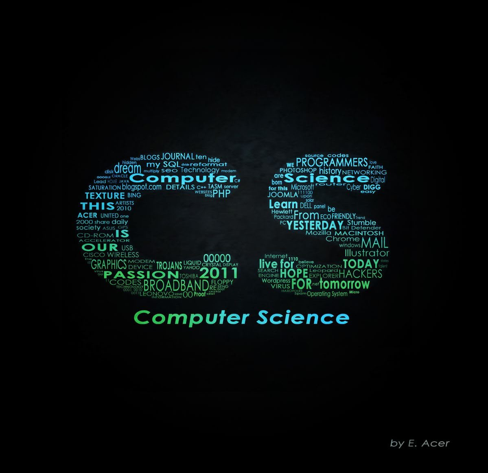

Carlos Francisco Huamani Quisocala
Estudiante de Ciencias de la Computación en la Universidad Católica San Pablo, Arequipa.

Sobre mí
Soy Carlos Francisco Huamani Quisocala, tengo 20 años y estudio Ciencias de la Computación en la Universidad Católica San Pablo (UCSP), en Arequipa. Mi enfoque es desarrollar software orientado a sistemas embebidos y calibración/modificación de software para unidades de control electronico (ECU) automotrices y combino el uso de terminales RF para gestión y trazabilidad de inventario con la coordinación constante en entornos operativos, trasladando ese mismo rigor de diagnóstico y precisión al código y los sistemas de control.
Habilidades
- HTML, CSS, Python, trabajo en equipo.
- Idiomas: Español (nativo), Inglés (A2).
Educación
- Universidad Católica San Pablo: Ciencias de la Computación, desde 2026.
- Colegio: Juilliard.
Próximos pasos
- Me interesa orientar mi carrera en Ciencias de la Computación hacia el ámbito automotriz y motriz, combinando mis bases en programación y resolución de problemas con el estudio de sistemas tecnológicos aplicados a la movilidad.
Mis cursos
Fundamentos de la Programación
Prof. Yessenia Deysi Yari Ramos
Comunicación I
Prof. Angel David Rodríguez Cruz
Introducción a la Vida Universitaria
Prof. Gabriela Ponce Reinoso
Introducción a la Computación
Prof. Ernesto Cuadros Vargas
Fundamentos Matemáticos para Computación
Prof. Sabrina Suárez Calcina
Lógica
Prof. Kristel Gisselle Loayza Cruz
Mis profesores
Yessenia Deysi Yari Ramos
Fundamentos de la Programación
Angel David Rodríguez Cruz
Comunicación I
Gabriela Ponce Reinoso
Introducción a la Vida Universitaria
Ernesto Cuadros Vargas
Introducción a la Computación
Sabrina Suárez Calcina
Fundamentos Matemáticos para Computación
Kristel Gisselle Loayza Cruz
Lógica
Mis compañeros
Eduardo Isaac Rojas Juarez
Emely Mirella Anccari Lopez
Dominick Ray Apfata Llaique
Rafael Chirinos Aspauza
Zafiro Shantal Quispe Alache
Nayeli Alexandra Ayta Asqui
Breshia del Pilar Peralta Mamani
Gerald Raphael Vilca Ramirez
Alexia Alisson Cayo Ccasa
Nayeli Yadira Ordoñez Asto
Edgar Sebastian Calle Torres
Franco Abdiel Salinas Rondon
Carlos Fabian Huarachi Humora
Chiara Valentina Ticona Chata
Sebastian Andre Ochoa Ortiz
Fernanda Zuñiga
Andrea Yadhira Paredes Meza
Franco Urcapaza Valencia
Omar Geancarlo Palomino Molina
Diego García Aguilar
Franco Carlos
Jorge Alvarez Benavente
Ismael Anderson Villanueva Apaza
Michael Fabian Cadena Candua
Luis Felipe Sandoval Charca
Ricardo Fabio Quispe Arámbulo
Alexis Joel Ramos Choque
Alejandro José Benavides Valdez
Karol Imasumac Roque Ramos
José Manuel Alviar Ccallme
Rodrigo Espinoza Concha
Juan Gabriel Huanaco Quispe
Cinthia Luz Mamani Chata